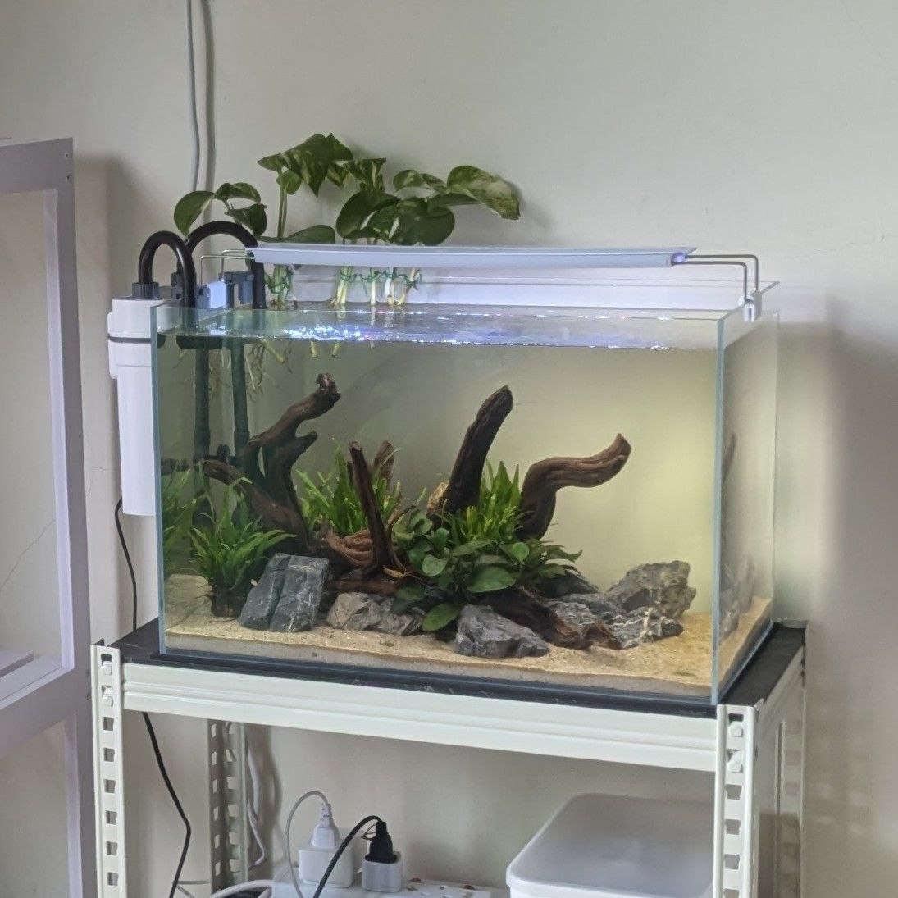
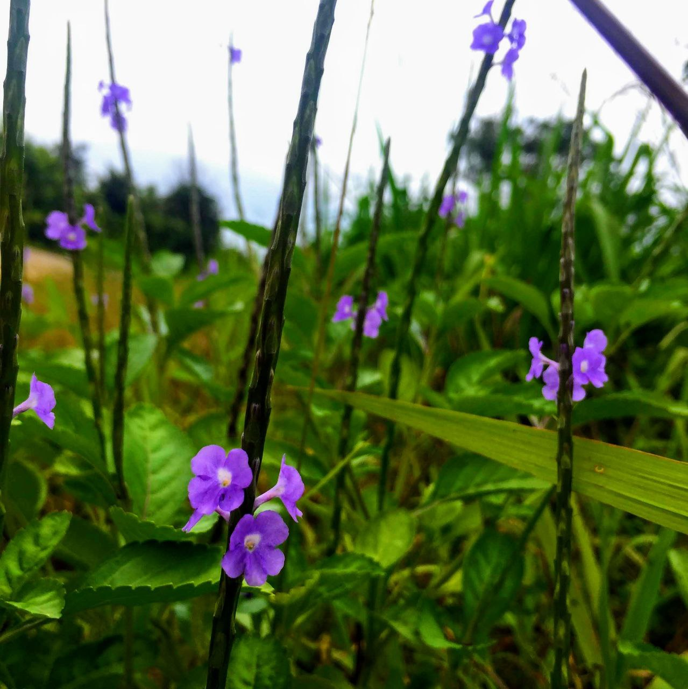

My Hobbies
Aquascaping

I enjoy creating underwater landscapes that blend art and nature, turning aquariums into living masterpieces. From selecting plants to designing layouts, aquascaping is my peaceful escape into creativity.
Photography

Capturing moments through the lens is a passion of mine. Whether it's stunning landscapes, candid portraits, or macro shots, photography allows me to see the beauty in everyday life and share it with others.
Video Games

Gaming is where I unwind and challenge myself. I dive into immersive worlds like Genshin Impact and GTA 5, and test my skills in competitive arenas like Valorant. It's a mix of storytelling, strategy, and fun!